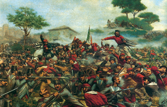

Lezione 16  L'Unità d'Italia
L'Unità d'Italia

Nella novella Libertà Verga descrive la rivolta di Bronte, cittadina siciliana ai piedi dell’Etna. Lo sbarco dei Mille fu visto infatti dalla media borghesia siciliana e dai contadini come una possibilità di riscatto sociale. In alcuni casi l’entusiasmo degenerò: il popolo assaltò e uccise i proprietari terrieri per spartirsi le ricchezze. I garibaldini guidati da Nino Bixio non potevano permettere tali rivolte e per ristabilire l’ordine fucilarono alcuni rivoltosi e condannarono gli altri all’ergastolo.
«Ora dovevano spartirsi quei boschi e quei campi. Ciascuno fra sé calcolava colle dita quello che gli sarebbe toccato di sua parte, e guardava in cagnesco il vicino. - Libertà voleva dire che doveva essercene per tutti! - Quel Nino Bestia, e quel Ramurazzo, avrebbero preteso di continuare le prepotenze dei cappelli! - Se non c'era più il perito per misurare la terra, e il notaio per metterla sulla carta, ognuno avrebbe fatto a riffa e a raffa! - E se tu ti mangi la tua parte all'osteria, dopo bisogna tornare a spartire da capo? - Ladro tu e ladro io -. Ora che c'era la libertà, chi voleva mangiare per due avrebbe avuto la sua festa come quella dei galantuomini! - Il taglialegna brandiva in aria la mano quasi ci avesse ancora la scure.
Il giorno dopo si udì che veniva a far giustizia il generale, quello che faceva tremare la gente. Si vedevano le camicie rosse dei suoi soldati salire lentamente per il burrone, verso il paesetto; sarebbe bastato rotolare dall'alto delle pietre per schiacciarli tutti. Ma nessuno si mosse. Le donne strillavano e si strappavano i capelli. Ormai gli uomini, neri e colle barbe lunghe, stavano sul monte, colle mani fra le cosce, a vedere arrivare quei giovanetti stanchi, curvi sotto il fucile arrugginito, e quel generale piccino sopra il suo gran cavallo nero, innanzi a tutti, solo.
Il generale fece portare della paglia nella chiesa, e mise a dormire i suoi ragazzi come un padre. La mattina, prima dell'alba, se non si levavano al suono della tromba, egli entrava nella chiesa a cavallo, sacramentando come un turco. Questo era l'uomo. E subito ordinò che glie ne fucilassero cinque o sei, Pippo, il nano, Pizzanello, i primi che capitarono».
(da Novelle di Giovanni Verga)